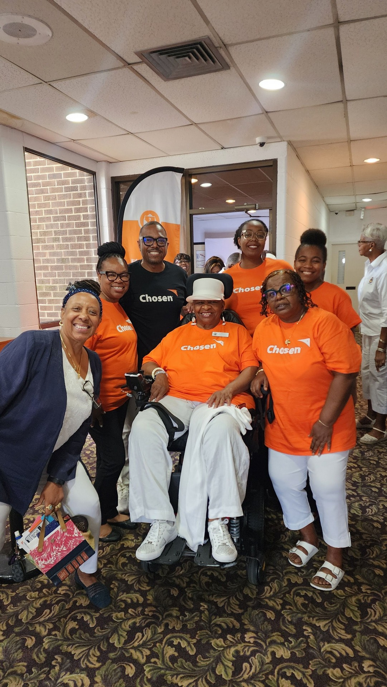

On July 18, 1996, the membership of the Church in obedience to the Holy Spirit, rendered a ninety seven percent “affirmative vote” of those “present and voting” in the election of Dr. Leonard L. Hamlin, Sr., as Pastor Elect. On November 24, 1996, Dr. Hamlin was installed and given full pastoral authority. Dr. Hamlin’s leadership in the words of the Apostle Paul, ring true to God’s promise, “Eye has not seen nor ear heard, nor has it appeared to man, what God has in store for those who love Him.” (I Corinthians 2:9). Under the profound pastoral leadership of Dr. Hamlin, Macedonia Baptist Church has been praising God for numerous blessings and witnessed the following:
On November 29, 2003, the Macedonia Baptist Church and the Nauck Community celebrated the unveiling of the Historical Marker on South 22nd Street.
In addition to leading the Church in its secular mission and pursuits, Dr. Hamlin led the Church into becoming a real asset to Arlington County and especially the Nauck Community. Pursuing his vision, he led the Church in expanding its property holdings by purchasing two properties on South Shirlington Road, i.e., 2219 & 2229, (now the site of the “Macedonian) and 2112 and 2114 (now the site of Wayne’s Kutz Barber Shop and A. J. Parker’s Beauty Shop). The Church later purchased the Veterans Memorial YMCA with its outdoor pool and renamed it the MBC Family Life Center (Dedication of MBC Family Life Center and Swim Center on September 9, 2007) (now the site of Funshine Pre-school). The Church is now in the developing stages of converting the pool to a year round pool. In 1999, the Church birthed the Bonder and Amanda Johnson Community Development Corporation (BAJCDC) to provide services to the Nauck Community and surrounding areas. In 2011, in conjunction with the Arlington Housing Corporation (Ground Breaking Ceremony was held on June 10, 2009) a 36 unit affordable housing unit, named “The Macedonian,” was dedicated and open for residents of Arlington County. These projects fell within his vision of helping the Nauck Community in its economic, educational, housing and entrepreneurial opportunities in their properties.
In keeping with the Church’s Vision Statement of “Becoming ACTIVE Disciples through Commitment, Witness, Love and Relationship,” under his leadership three sons and two daughters are now Pastoring congregations: Dr. Robert Cheeks (2007), Shiloh Baptist Church, McLean, VA; Reverend Todd Brown (2007), First Baptist Church Chesterbrook, McLean, VA; Reverend Evelyn King (2011) Greater Gospel Church, Lorton, VA; Reverend Todd Brown (2016) New Mount Zion Baptist Church, Orangeburg, SC; Dr. Shakina Rawlings (2016) Kingdom Fellowship Church, Alexandria, VA and Reverend James Gibson (2018), First Baptist Church Chesterbrook, McLean, VA.
Under his tutelage, the Church was blessed with the licensing of 22 Ministers: Minister Danette Adams (October 29, 2003), Minister Desiree Alston (October 8, 2017), Minister Rochelle A. Allen (November 30, 2005), Minister Billy O. Blake (November 30, 2005), Minister Janice Preston Clarke (May 30, 2012), Minister Birdena C. Whitehead-Crawley (July 30, 2008), Minister Daniel A. Cruz (October 29, 2003), Minister Hazel L. Garner-Duckett (July 30, 2008), Minister James O. Gibson (December 29, 2004), Minister Richard O. Green, Jr. (April 22, 2001), Minister Tonia P. Heggs (May 30, 2012), Minister Evelyn H. King (November 23, 1997), Minister Karen Michelle Leverette (December 29, 2004), Minister Lueida B. Mitchell (October 29, 2003), Minister Jeffrey Mills (November 30, 2005), Minister Noreen Freeman-Murphy (October 8, 2017), Minister Lois L. Nicholson (July 9, 2008), Minister George Pittmon (June 24, 2015), Minister Shakina D. Rawlings (July 9, 2008), Minister Beatrice Thompson (July 9, 2008), Minister Lillie I. Sanders (July 9, 2000) and Minister Morris Williams (December 20, 1998).
Seven Ministers Ordained: Reverend Evelyn H. King (October 25, 2006), Reverend Jonathan J. McColumn (October 25, 2006), Reverend James O. Gibson (April 19, 2016), Reverend Lois L. Nicholson (June 26, 2010), Reverend Dr. Shakina D. Rawlings (October 23, 2013), Reverend Lillie I. Sanders (October 25, 2006) and Reverend Morris G. Williams (October 25, 2006).
Twenty-two Deacons Ordained: Deacon Thomas Adams (October 17, 1999), Deacon Darryl Bates, Sr. (September 25, 2011),Deacon Alan M. Boswell (February 22, 2004), Deacon Gifford Brown (October 25, 2009), Deacon William A. Collins, Jr. (September 21, 2014), Deacon Cedric E. Hammond (October 17, 1999), Deacon Alfred Leon Henderson (October 17, 1999), Deacon Quincy A. Henderson (April 27, 2003), Deacon Lottee Henderson (April 27, 2003), Deacon John Jenkins (February 22, 2004), Deacon Albert C. King (October 17, 1999), Deacon Eric R. Lambert (February 22. 2004), Deacon Wendell Leverette (April 27, 2003), Deacon Jeffrey J. Mills (October 17, 1999), Deacon Clarence Nicholson (Confirmation September 14, 1997), Deacon George Pittmon, Jr. (October 17, 1999), Deacon James E. Poole (September 21, 2014), Deacon James Randle III (September 21, 2014), Deacon Melvin Rhoden (September 21, 2014), Deacon Ulysses Terry (February 22, 2004), Deacon Kendrick Shipman (October 25, 2009), Deacon James E. Ward, Sr. (October 17, 1999), Deacon Bertram Vaughan (September 21, 2014).
Twenty-six Deaconesses Concentrated: Deaconess Cassandra F. Bates (September 25, 2011), Deaconess Birdena C. Crawley (October 17, 1999), Deaconess Connie Cheeks (April 27, 2003), Deaconess Rosa L. Dunkley (October 25, 2009), Deaconess Teri V. Gibson (October 17, 1999), Deaconess Connie M. Goodwin (October 25, 2009), First Lady Machell A. Hamlin (October 17, 1999), Deaconess Vancella Hammond (April 27, 2003), Deaconess Marcia V. Hackley (October 25, 2009), Deaconess Tonia P. Heggs (October 25, 2009), Deaconess Eva D. Henderson (September 25, 2011), Deaconess Jacqueline P. Henderson (June 25, 2006), Deaconess Joan M. Henry (April 27, 2003), Deaconess Emily Hoffman (April 27, 2003), Deaconess Clara W. Lamback (October 17, 1999), Deaconess Yvonne S. Lambert (February 22, 2004), Deaconess Elnora Mills (October 17, 1999), Deaconess Lueida B. Mitchell (October 17, 1999), Deaconess Alice F. Montgomery (September 25, 2011), Deaconess Rosalie N. Moore (February 22, 2004), Deaconess Pamela A. Pittmon (April 27, 2003), Deaconess Jamilia B. Shipman (October 25, 2009), Deaconess Yvonne M. Smith (October 17, 1999), Deaconess Mary S. Taylor (October 17, 1999), Deaconess Vidalia L. Tillman (October 17, 1999) and Deaconess Bessie F. Wallace (October 17, 1999).
On July 25, 1997, Deacon Woodrow W. Simmons was appointed Chairman and Deacon Alfred O. Taylor was appointed Vice Chair of the Deacon Ministry. On July 27, 2007, Deacon Alfred O. Taylor was appointed Chair and Deacon Clarence Nicholson was appointed Vice Chair of the Deacon Ministry. The Church was also blessed by the naming of Deacon Isaac Brooks, Sr. as Chairman of the Deacon Ministry Emeritus (May 2, 2010) and Deacons Thomas Adams, Ulysses Terry and Walter Williamson as Deacon’s Emeritus (May 2, 2010).
During his tenure, 44 ministries were started or renamed:Audio Ministry, Beautification Ministry, Communications Ministry, Community Outreach & Ministry Relationships,Christian Education Ministry, Congregational Care/Nursing Home Ministry, Cornerstone Life Ministry, Couple’s Ministry, Culinary Arts Ministry, Discipleship Classes, Emergency Management, Employment Ministry, Evangelism Ministry, Events Planning Ministry, Family Life Ministry, Foreign Missions Ministry, Forerunner’s Ministry, Generation Now Ministry, Heart& Soul Substance Abuse Support Group Ministry, Heart Walk Ministry, Hospitality Ministry, Information Center Ministry, Inter-Church Community Health Initiative (ICHI), Library Ministry, Liturgical Dance Ministry, Meals on Wheels Ministry, Media Ministry, Men’s Ministry, Missions & Outreach Ministry,New Horizon Resource Ministry, New Members & Membership Planning Ministry (now called New Members Ministry), Nursing/Health Ministry, Planning & Operations Ministry, Prayer Ministry, Prison Ministry, Recreation Ministry, Security Ministry, SHARE Distribution, Special Ministry, Support Ministry, Transportation Ministry, Tribal Congregational Care Ministry, Usher Ministry, Video Ministry, Women’s Ministry, Worship Ministry, Worship Music & Arts Ministry and Young Adult Ministry. Deacon Walter Sterling Smith saw a need for our church and community to benefit from food that was nutritious, healthy and affordable. Deacon Smith requested Deaconess Joan Henry, Coordinator of the Missionary Society, to obtain information on the SHARE program. On August 27, 1998, Deaconess Henry agreed to serve as Host Site Coordinator with the approval of Reverend Leonard L. Hamlin Sr., and Macedonia Baptist Church became a Host Site for the SHARE program.
As the membership grew to approximately 1,300 members, the Sunday Morning Worship Service was changed from one service beginning at 10:45 a.m. to two services beginning at 7:45 a.m. and 10:45 a.m.To accommodate the growing congregation, a major renovation of the upper level of the Church was undertaken: new seats, new sound system and computerization of the church offices. In 2016,the two morning services was combined into one service beginning at 9:30 a.m. Later undertakings included re-dedication of the Clarence A. Robinson Library which included a Computer Learning Center and the implementation of a Before and After School (Child Care) Learning Center (closed 2008) and a 26 and 15 passenger bus.
On Sunday, March 25, 2018, a Farewell Gala for Dr. Leonard L. Hamlin, Sr., was held at the Crystal City Hyatt Hotel, Arlington, VA where approximately 350 people were in attendance. After 22 years of faithful ministerial service to the Macedonia Baptist Church, the Church, praising God for his elevation to the position of Canon Missioner for the Washington National Cathedral joined and celebrated with him as he delivered his final messages at our Easter Sunday Sunrise April 1, 2018 and our 10:00 a.m. Morning Worship Services.
According to the Church Constitution when the church is without a Senior Pastor the leadership reverts to the Deacons Ministry (Deacons Quincy Henderson, Vice Chair, Cedric Hammond, Sr., Secretary, Daryl Bates, Sr., Gifford Brown, Leon Henderson, Lottee Henderson, Bertram Vaughan, James Randle and Theodore Moton III with Dr. Alfred O. Taylor, Jr., serving as its chair) to assume its leadership. The Church continued in its growth closely following its mission. On April 22, 2018, following the process stated in the Church Constitution a Pastoral Search Committee was established and approved by the membership. The committee included the following: Dr. Alfred O. Taylor, Jr., Chair of the Deacons Ministry; Deaconess Pamela Pittmon, Chair of the Deaconess Ministry; Trustee Lamont West, Chair of the Trustee Ministry; Minister Tonia Heggs, Associate Ministers Representative; At Large Members: Karen Archer, Chair, Michelle Johnson, Secretary, Deaconess P. Velator Smith, Trustee Deloris Skipwith, Deacon Bertram Vaughan, Yvonne Hawkins, Terron Sims, Esther Green and James Landers.
During this timeframe numerous highlights were celebrated e.g., Tuesday, October 23, 2018, the Arlington County Board unanimously approved Macedonia Baptist Church Family Life Center Use Permit (which includes the zoning amendment for community pools), the community pool use permit and offsite parking. The Board accepted the County Manager’s recommendation without any amendments. On Sunday, November 18, 2018, Deacon Theodore Moton III was Ordained and five Deaconesses were Consecrated, i.e., Deaconesses Delicia Moton, Robin Randle, Diane Short, P. Velator Smith and Francine Vaughan. Dr. James Victor, pastor of the Mt. Olive Baptist Church, Arlington, Virginia delivered the occasion message. On December 13, 2018, the membership approved and adopted the revised History of the Macedonia Baptist Church.